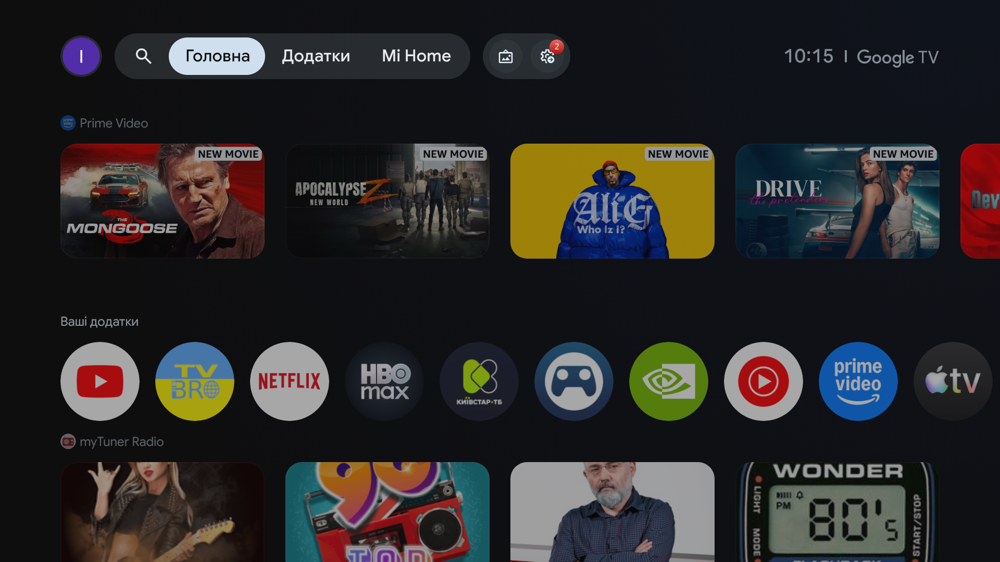

Завантаж APK на TV. Без браузера — передай файл із телефона.
Відкрий APK, дозволь встановлення для програми, яка відкрила файл, і підтвердь запит Android.
Запусти Carpe TV. Спершу оглянь його або обери головним екраном.
Один APK; системні функції налаштовуються окремо.
Кнопка Home: обери Carpe TV у системному списку домашніх екранів і перевір фізичним пультом. Деякі прошивки можуть ігнорувати цей вибір.
Повернення: обери штатний лаунчер у системних налаштуваннях Home. Штатний лаунчер не видаляй.
Install in three steps
Download the APK on your TV. No browser? Transfer it from your phone.
Open the APK, allow the app that opened the file to install it, then confirm in Android.
Open Carpe TV. Explore it first or choose it as your Home screen.
The basic launcher needs one APK. Extra system controls are optional.
Home button: select Carpe TV in Android's Home app chooser and verify with the physical remote. Some firmware may ignore this choice.
Switch back: select the stock launcher in Android Home settings. Keep the stock launcher installed.
Менше кроків до улюбленого
Carpe TV відкриває обрані програми на головному екрані. Усі встановлені програми зібрані в бібліотеці з пошуком, а фон і заставку можна змінити під себе.

Штатний Google TV · знімок з того самого Xiaomi TV Stick
Carpe TV · знімок тестової збірки на Xiaomi TV Stick
Один APKЗавантаж, відкрий і підтвердь встановлення в Android. Для базового лаунчера не потрібні root чи комп’ютер.
Пульт на першому місціВеликі плитки, видимий фокус і швидкий доступ до програм без додаткового акаунта.
Можна повернутисяШтатний лаунчер лишається встановленим. Вибір Home можна змінити в системних налаштуваннях.
Fewer steps to your favorites
Carpe TV puts favorite apps on Home. All installed apps are in a searchable library, while the wallpaper and screensaver are yours to choose.
Stock Google TV · captured on the same Xiaomi TV Stick
Carpe TV · test build on Xiaomi TV Stick
One APKDownload, open and confirm installation in Android. Basic use needs no root or computer.
Built for the remoteLarge tiles, visible focus and quick app access without a launcher account.
Switch backThe stock launcher stays installed. You can change your Home choice in Android settings.
Поглянь на Carpe TV
Відкрий бібліотеку, додай програму в обране та зміни порядок плиток пультом. Записано на Xiaomi TV Stick 4K; набір програм залежить від пристрою.
Бібліотека → обране → порядок плиток · 10 с
ГоловнаНалаштування
See Carpe TV
Open the app library, add a favorite, and rearrange Home tiles with the remote. Recorded on a Xiaomi TV Stick 4K; installed apps vary by device.
Library → favorites → tile order · 10 sec
HomeSettings
Пристрої
Позначаємо окремо те, що перевірили на приставці, і те, що ще чекає тесту. Вибір Home та системні дії можуть відрізнятися між прошивками.
Xiaomi TV Stick 4K · MiTV-AFMU1Android TV 14 · інтерфейс і оновлення перевірені; Home після YouTube відкрив Google TVПеревірено частково
Xiaomi Mi BoxОкремий тест запланованоНе перевірено
Інші Android TV / Google TVПотребують перевірки на конкретній моделіНе перевірено
Devices
We distinguish device testing from planned support. Home selection and system controls can differ across firmware.
Xiaomi TV Stick 4K · MiTV-AFMU1Android TV 14 · UI and test updater checked; Home after YouTube opened Google TVPartly tested
Xiaomi Mi BoxDevice test plannedUntested
Other Android TV / Google TVNeeds testing on each modelUntested
Системні дії: що таке Shizuku
Shizuku — окремий застосунок для системних дій без root. Він потрібен Carpe TV для сну за таймером і керування окремими системними програмами. Сам Shizuku нічого не вимикає. Головний екран, запуск програм і вибір Carpe TV як Home працюють без нього. Шестизначний код Android потрібен лише для першого підключення.
Carpe TV → Налаштування → Пристрій
Установи Shizuku й увімкни «Налагодження через Wi-Fi». У Carpe TV обери «Системні дії» → «1. Підключити через телефон». Майстер покаже QR-код. Телефон і приставка мають бути в одній довіреній мережі Wi-Fi.
На екрані ТВQR
Це додатковий крок. Вибір Carpe TV як Home працює без Shizuku.
Для повного переходу спочатку вибери Carpe TV головним екраном в Android і перевір фізичну кнопку Home після перезапуску. На деяких прошивках потрібна окрема служба Carpe TV для кнопки Home. Вимкнення штатного лаунчера на нашому Xiaomi зараз не пропонується: воно викликало екран відновлення. Як повернутися до штатного Home.
System actions: what is Shizuku?
Shizuku is a separate app for system actions without root. Carpe TV uses it for sleep on a timer and for managing selected system apps. Installing Shizuku alone does not disable anything. Your Home screen, app launching, and choosing Carpe TV as Home work without it. Android’s six-digit code is only for the first connection.
Carpe TV → Settings → Device
Install Shizuku and enable Wireless debugging. In Carpe TV, choose “System actions” → “1. Connect with phone.” The wizard shows a QR code. Keep your phone and TV on the same trusted Wi-Fi network.
On your TVQR
This is optional. Choosing Carpe TV as Home does not require Shizuku.
To make the switch, first select Carpe TV as Home in Android and test the physical Home button after reboot. Some firmware needs Carpe TV’s separate Home button service. Disabling the stock launcher is currently unavailable on our Xiaomi because it opened a recovery screen. How to return to stock Home.
Перед встановленням
Код і ліцензіяКод можна переглянути на GitHub. Він поширюється за Apache 2.0; ліцензії сторонніх компонентів зібрані окремо.
Звідки брати файлAPK публікуємо в GitHub Releases. Там само буде контрольна сума SHA256SUMS для перевірки завантаженого файлу.APK для завантаження ще немає. Після випуску файл і його контрольну суму розмістимо в GitHub Releases.
Що потрібно для запускуДля основних функцій достатньо встановити APK і вибрати Carpe TV домашнім екраном в Android. Root і Shizuku не потрібні; системні дії вмикаються окремо.
Code and licenseRead the code on GitHub. It is licensed under Apache 2.0; third-party licenses are listed separately.
Where to get the fileThe APK is published in GitHub Releases, with a SHA256SUMS file to verify the download.The APK is not available to download yet. The file and its checksum will appear in GitHub Releases.
What you needInstall the APK and select Carpe TV as your Home screen in Android. Basic features need neither root nor Shizuku; system controls are enabled separately.
The software is provided “as is” without warranties under its license. Report a security issue.